一文了解GSVA原理
原文：https://mp.weixin.qq.com/s?__biz=MzAwMzIzOTk5OQ==&mid=2247498149&idx=2&sn=1af22cfed504ba604ddd392dcddc1301&chksm=9b3c80f5ac4b09e3e920373bcdf1e1b10dd4c5318f93c55309940739caaca8c58eb98aec265d#rd 合集：文献速递
写在前面
最近在做一个大数据的Gene set variation analysis (GSVA) ，突然想到自己对GSVA的输入数据要求及具体运算原理知之甚少，遂找到了GSVA发明团队2013年原始发表于《Bioinformatics》的文章：GSVA: gene set variation analysis for microarray and RNA-Seq data[1]考虑到我的主要业务是软生信的内容，这类涉及算法的硬生信文章可以说是我学术生涯至今遇到的最大挑战（还是文章看少了）。各位也不用担心，如果看不懂可能是我解释能力欠佳，诸位可以选择阅读原文，再不济的话，在下一篇推送中我将绕过原理具体地剖析GSVA的应用及代码实现。
Abstract
在生物信息学数据的分析中，面对一个物种动辄上万的基因，基因集富集分析（ Gene set enrichment (GSE) analysis ）常常能够帮我们降维、去噪且更有利于我们解释数据背后的生物学意义。
为了提供更好的分析方法以适用于异质性更高的数据集，该团队设计出了Gene Set Variation Analysis (GSVA)的方法并与当时存在的几种基因集富集分析方法进行了比较。显然在模拟数据、实战的RNA-Seq数据、微阵列的数据中都展示出这种基于样本的非监督式的“新兴”方法更胜一筹。
Background
●1 GSE
不知是杂志亦或是作者的风格，该篇文章的Background异常之长，占据了文章的主要篇幅。
首先，还是那句话，无论多复杂的生信数据，最后能做成可视化的图表并向读者传达其中蕴含的生物学意义，这才是生信的真谛。以往的GSE分析（如non-parametric enrichment statistics, battery testing, and focused gene set testing）已经能够系统性的将一些基因列表进行注释，这些方法也被广泛的应用于癌症以及各类代谢性疾病之中，但对于固有噪声的处理上略有不足。
●2 Null hypothesis
不同的GSE分析方案的差别主要在与对零假设的理解不同。零假设的核心思想便是基因集的内部数据与外部数据是没有显著差异的。例如对于self-contained tests来说，如果这个基因集中存在一个显著差异的基因，那么就足以在独立检验中做出否认“这个基因集中不存在显著差异”的零假设。所以相较于competitive tests来说self-contained tests更能够识别出基因集中的微小变化。但是一个方法过于敏感也不总是优点，例如面对大型的、多表型的、多结构性的数据（TCGA中收录的数据就是一个这样的例子），敏感度过高往往会带来许多假阳性的结果。
●3 GSVA 为了解决我们上面谈到的问题，该团队便设计了GSVA的方法。这是一种非参数、非监督式的算法，类似于competitive tests的思想。在GSVA分值计算的过程中，可以对每个样本进行独立的计算，并给出一个综合考虑到基因集内部及基因集外部的分值。粗暴的理解来说，GSVA是一个以基因集/通路为中心的分析方法，它做的最重要的事，就是可以将基因表达矩阵转换为以基因集为单位的表达矩阵 。●4 Schematic overview & function
- GSVA的输入文件只有两个，一个是normalize后的表达矩阵（拥有p个基因以及n个样本，并且通常p>>n），另一个是基因集的分类信息。
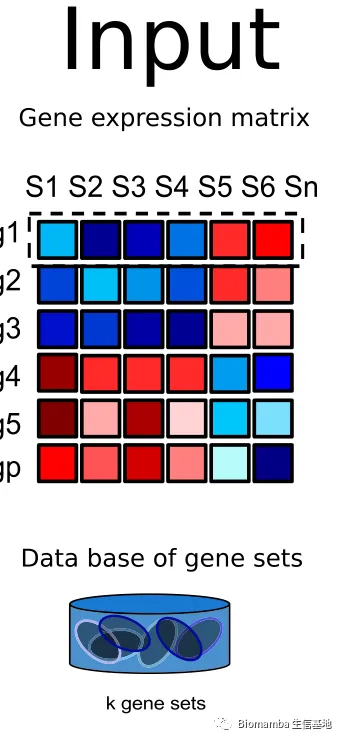
-
输入数据后，GSVA首先会判断基因i在样本总体分布的背景下，在样本j中是高表达还是低表达（按照这种说法，它应该是会做一个scale by row的操作）。在正式进行GSVA评分前，我们还需要考虑一些技术上引入的噪声，例如微阵列中的探针效应以及RNA-Seq中的GC含量，这些都会引入系统误差。
-
在微阵列的数据处理中，我们认为这种连续的表达量符合Gaussian分布，因此表达的统计量使用non-parametrics kernel estimation，公式为：
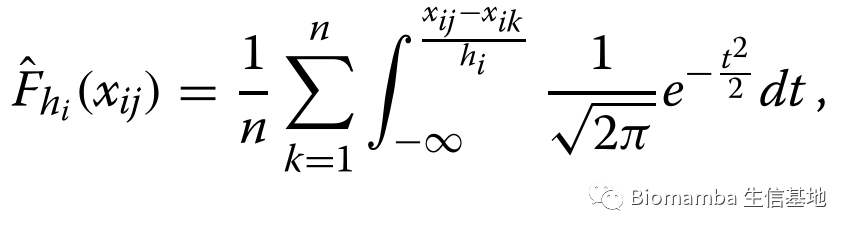
公式中：i为基因的坐标，j为样本坐标，hi=Si/4,Si是基因i在样本中的标准差（也就是说hi控制了带宽并反应了该基因表达量的离散程度），n为样本总数。
- 对于RNA-Seq来说，这种离散的表达量分布更符合Poisson分布，因此其计算公式也会相应地产生变化：
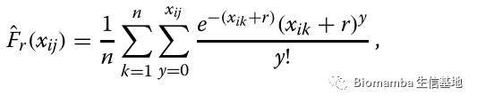
- 以上针对不同分布特征数据的表达量计算示意图如下：
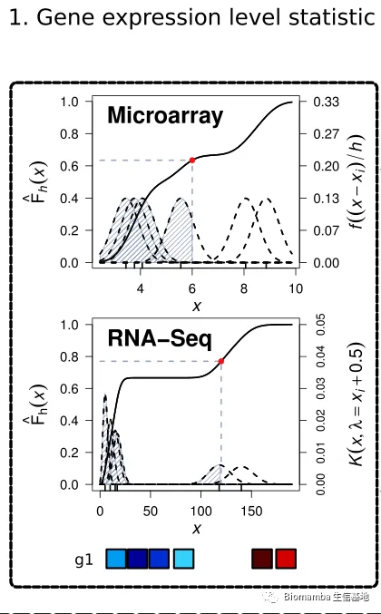
- 得到了表达量zij（刚才求出来的Fhi (xij)或 ˆFr(xij)）后，为了排除离群值的影响，还需要进行normalize，并依据normalized矩阵对基因进行降序排序：
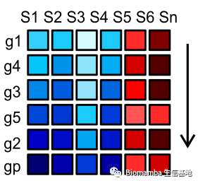
- 进行normalize后，万事具备，就可以计算Kolmogorov-Smirnov (KS) like random walk statistic：
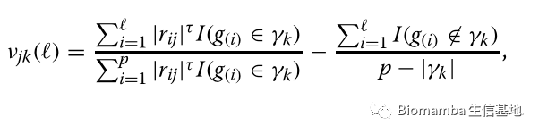
其中τ是尾端权重，通常默认τ = 1，γk是第k个基因集， I(g(i) ∈γk)用于判断基因i是否属于γk。- 坚持住！公式快写完了！得到KS like random walk statistic后(νjk(l))，有两种方法（ classical maximum deviation method和normalized ES）将νjk(l)转换为最后的enrichment score（GSVA Score）。classical maximum deviation method：
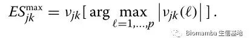
- 由于KS like random walk statistic的固有特点，在零分布下产生最大的非零偏差后会展现出一个双峰分布的特点。这与GSEA的原理其实是相似的，并且在零分布的两端独立的判断显著性。
那么当样本属于高斯分布时，ES的计算方式则需要改变：
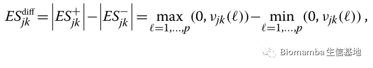
- 那么
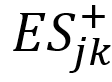
与 分别表示最大与最小的离零random walk deviations。这类似于一个Kuiper检验统计量，可以使得这个统计量在数据末端也具有敏感性。这其实比较好理解，双端模型能反应出Up和Down的基因在矩阵中带来的影响，而单端模型中Up和Down的影响会互相抵消。撒花，终于得到GSVA Score了：
分别表示最大与最小的离零random walk deviations。这类似于一个Kuiper检验统计量，可以使得这个统计量在数据末端也具有敏感性。这其实比较好理解，双端模型能反应出Up和Down的基因在矩阵中带来的影响，而单端模型中Up和Down的影响会互相抵消。撒花，终于得到GSVA Score了：
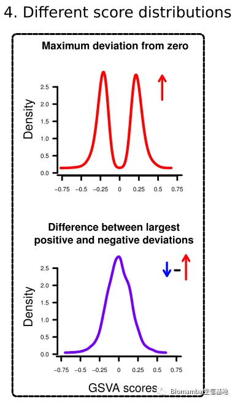
- 作者模拟出了一个包含2000个基因及30个样本的矩阵，以及随机抽出10~100个基因作为基因集，中输出的两种GSVA分布如上图所示。GSVA值本身并不包含差异信息，得到了GSVA值之后如果你还想继续进行差异分析，我建议你参考一下这两篇：
知识都还给统计老师了怎么办？ 给你安排一个懂生信的工具人（七）：不会有人真的只会做T检验吧
Results
●1 Review of other methods
历经千辛万苦，我们终于理解了GSVA的原理并得到了GSVA Score，那这种GSVA Score是否足够科学，与当时已广为流通的一些GSE分析方法有何异同与优势呢？
- GSE的分析方法大概可以分为有监督式的（是一个机器学习中的方法，可以由训练资料 中学到或建立 一个模式（learning model，并依此模式推测新的实例。训练资料是由输入物件（通常是向量）和预期输出所组成。函数的输出可以是一个连续的值（称为回归分析），或是预测一个分类标签（称作分类） ）[2]、无监督式（其目的是去对原始资料进行分类，以便了解资料内部结构。有别于监督式学习网络，无监督式学习网络在学习时并不知道其分类结果是否正确，亦即没有受到监督式增强(告诉它何种学习是正确的)。其特点是仅对此种网络提供输入范例，而它会自动从这些范例中找出其潜在类别规则。当学习完毕并经测试后，也可以将之应用到新的案例上。）[2]的以及population式的、single sample式的。大部分GSE方法都类似于我们曾经谈到过的GSEA：答读者问 （一）单基因究竟能否进行GSEA，是一种有监督式的、population式的GSE方法。这些方法在计算ES时会按照表型分类（样本的一些注释信息）去考虑平均差异表达；这忽略了基因之间的相关性，会带来假阳性率的上升。
- 那么supervised, single sample based的代表就是ASSESS,按照表型将数据一分为二后，ASSESS算法对每个样本进行密度评估并计算ES值，这个方法显然对二分类的表型是十分受用的。但是GSVA计算时是不考虑表型信息的，显然也更加合理。
- 除了GSVA外还有三种unsupervised, single sample based方法分别是Pathway Level analysis of Gene Expression (PLAGE), single sample GSEA (ssGSEA) and the combined z-score。也就是说这三种方法逐样本、逐基因集的去计算ES。PLAGE标准化该基因在样本间的表达量，而z-score的标准化方法是针对一个样本中的所有基因（可以理解为scale by row与scale by col的差别，用过heatmap的小伙伴会知道）。注意，PLAGE与z-score是参数性的评估方法，换句话说，这两种方法需要样本满足连续性的正态分布。ssGSEA的方法要更复杂一些，其利用基于表达量的经验累计分布函数考虑到基因集内的基因与基因集外的基因计算每个样本的ES，不仅如此，挨个计算完后还需要考虑到所有基因集及样本重新进行normalize（是不是有点绕，简而言之就是所有因素ssGSEA都考虑到了）。
- 那么我们对这几种算法做一个小小的总结与比较：
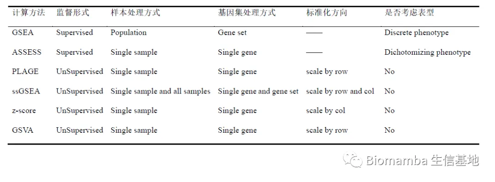
●2 Comparison of methods on simulated data 在理论上进行了几种计算方法的特征对比后，作者找了一些实战的例子来真实的对比一下GSVA与其他方法的优劣，大家真刀真枪的碰一碰。首先，作者模拟出了一个具有探针效应的、包含1000基因的两组微阵列样本数据。并且认为定义了两个各包含30个基因的基因集，其中一个已知是差异基因集、另一个则不是。接着这个思路，作者设计了两种信噪比以及基因集中差异基因的含量（50% and 80%，可以用于后续假阳性的发现），通过上述提到的GSVA, ssGSEA, PLAGE and the combined z-score进行分析后利用t-test进行差异分析。随后统计statistic power与一类错误（假阳性）这两个指标，结果如下图所示。在各种信噪比及差异基因含量的组别中，GSVA均展现出了良好的结果，一类错误的发生概率大都相近，在置信度（α=0.05）附近徘徊，但GSVA与ssGSEA在statistic power上展现出了大幅的优势。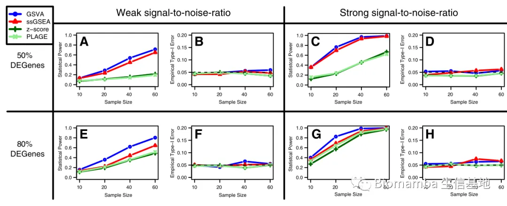
- 为了判断各类方法的准确性，作者模拟了一个更大的数据集，其中包含10000个基因以及60个样本，将其中的1000个基因设定为差异基因，1000个基因中的500个设定为差异基因集。在5%FDR的水平下进行了一百次的重复计算后评估area under the ROC curve (AUC)，可以看出除了在“强信噪比及80%的差异基因”这一条件下，其他情况中GSVA都拥有一个更高的AUC值，可以初步判断在大多数情况下GSVA的准确性都更高。
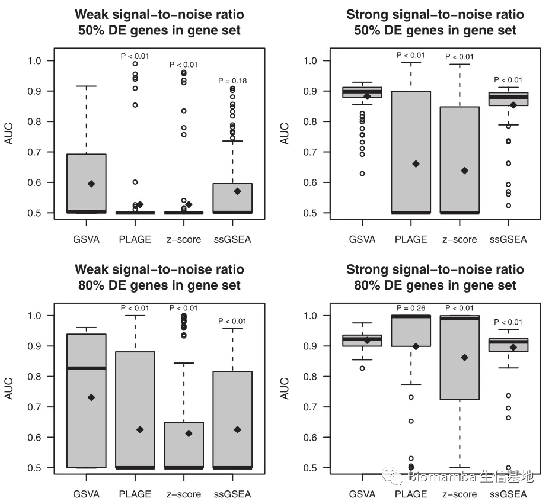
- 为了评估GSVA在生存分析中的应用，下一步作者又模拟了一个包含1000个基因的两组别数据，模拟了50个基因集（每个基因集10个基因，其中只有一个为差异基因集而其他49个为非差异基因集）通过交叉验证研究评估这些GSE分析方法用于生存分析时的预测能力。生存分析的具体原理及步骤这里就不多说了，大家感兴趣我们后面可以用一篇推送来专门说明，总之，在n=25，50，75，100的条件下各重复了一百次之后，下图的结果也显而易见——GSVA的一致性是最高的。
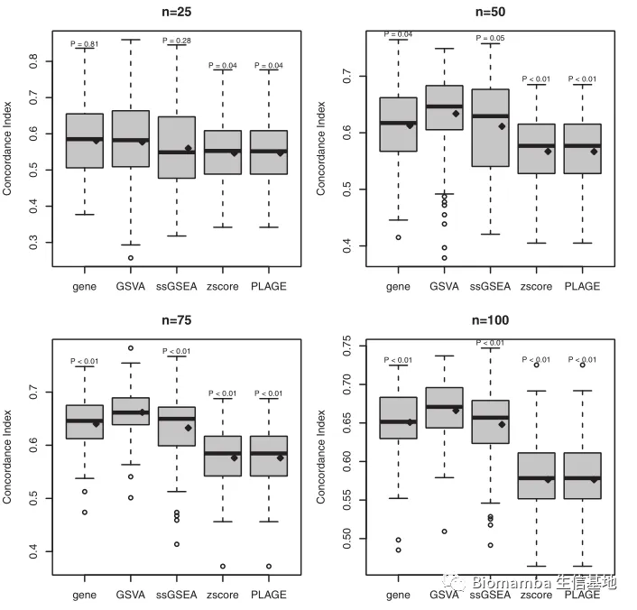
前面用到的都是作者模拟出来的数据，为了说服读者自己的计算方法可以真正的走向应用，他们还去TCGA上下载了几个数据集做了类似于上述的验证。结果也都大同小异，无非就是为了告诉大家，无论从哪个角度、何种来源的数据集，GSVA均展示出了明显的优势。
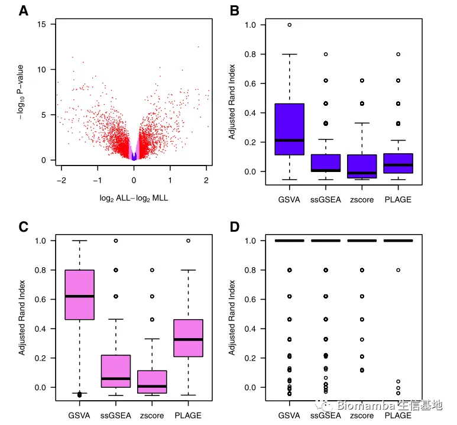
Conclusions
该团队设计出了GSVA这种GSE分析的方法，不仅如此，他们还将GSVA算法封装并发布在了bioconductor之中[4]。这种无监督式、非参数、以样本为基础的算法能够在多试验、多表型的数据集中运用。无论是RNA-Seq还是微阵列的数据，GSVA均能轻松驾驭。产生的数据也能用于下游的差异分析、拷贝数变异分析、相关性分析等进一步的分析之中。
参考文献
[1]Hänzelmann S, Castelo R, Guinney J. GSVA: gene set variation analysis for microarray and RNA-seq data. BMC Bioinformatics. 2013;14:7. Published 2013 Jan 16. doi:10.1186/1471-2105-14-7
[2]https://blog.csdn.net/u011630575/article/details/58659372/
[3]https://www.bioconductor.org/packages/release/bioc/vignettes/GSVA/inst/doc/GSVA.html#References
[4]感谢某财政学专家在数理方面对本文的帮助(^_^)

如何联系我们
公众号后台消息更新不及时，超过48h便不允许回复读者消息，这里给大家留一下领取资料、免费服务器的微信号 ，方便各位随时交流、提建议(科研任务繁重，回复不及时请见谅)。此外呼声一直很高的交流群 也建好了，欢迎大家入群讨论：永久免费的千人生信、科研交流群
大家可以阅读完这几篇之后添加给生信入门初学者的小贴士 如何搜索公众号过往发布内容
 您点的每个赞和在看，我都认真当成了喜欢
您点的每个赞和在看，我都认真当成了喜欢